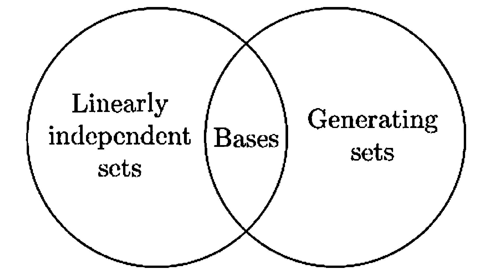

§ 6. Bases and Dimension¶
Bases¶
Definition 6.1 : Basis
A basis \(\beta\) for a vector space \(V\) is a linearly independent subset of \(V\) that generates \(V\). If \(\beta\) is a basis for \(V\), we also say that the vectors of \(\beta\) form a basis for \(V\).
Theorem 6.2 : A set is a basis if and only if every vector has a unique linear representation.
Let \(V\) be a vector space and \(\beta=\left\{u_{1}, u_{2}, \ldots, u_{n}\right\}\) be a subset of \(V\). Then \(\beta\) is a basis for \(V\) if and only if each \(v \in V\) can be uniquely expressed as a linear combination of vectors of \(\beta\), that is, can be expressed in the form
for unique scalars \(a_{1}, a_{2}, \ldots, a_{n}\).
Proof
Let \(\beta\) be a basis for \(V\). If \(v \in V\), then \(v \in \operatorname{span}(\beta)\) because \(\operatorname{span}(\beta)=V\). Thus \(v\) is a linear combination of the vectors of \(\beta\). Suppose that
are two such representations of \(v\). Subtracting the second equation from the first gives
Since \(\beta\) is linearly independent, it follows that \(a_{1}-b_{1}=a_{2}-b_{2}=\cdots=a_{n}-b_{n}=0\). Hence \(a_{1}=b_{1}, a_{2}=b_{2}, \cdots, a_{n}=b_{n}\), and so \(v\) is uniquely expressible as a linear combination of the vectors of \(\beta\).
Conversely, assume that each \(v\in V\) can be uniquely expressed as a linear combination of vectors of \(\beta\).
First, this assumption implies that every \(v\in V\) can be written in the form
for some scalars \(a_{1},\ldots,a_{n}\). Hence \(v\in \operatorname{span}(\beta)\) for all \(v\in V\), so
Since \(\operatorname{span}(\beta)\subseteq V\) always holds, we conclude that
so \(\beta\) spans \(V\).
Next we show that \(\beta\) is linearly independent. Suppose
But \(0\in V\), and by assumption it has a unique representation as a linear combination of vectors of \(\beta\). One such representation is
By uniqueness, we must have \(c_{1}=c_{2}=\cdots=c_{n}=0\). Therefore \(\beta\) is linearly independent.
Since \(\beta\) spans \(V\) and is linearly independent, it is a basis for \(V\).
Theorem 6.3 : A finite generating set can be reduced to a basis.
If a vector space \(V\) is generated by a finite set \(S\), then some subset of \(S\) is a basis for \(V\). Hence \(V\) has a finite basis.
Proof
If \(S=\varnothing\) or \(S=\{0\}\), then \(V=\{0\}\) and \(\varnothing\) is a subset of \(S\) that is a basis for \(V\).
Otherwise \(S\) contains a nonzero vector \(u_{1}\). By item 2 of Concept 5.3, \(\left\{u_{1}\right\}\) is a linearly independent set. Continue, if possible, choosing vectors \(u_{2}, \ldots, u_{k}\) in \(S\) such that \(\left\{u_{1}, u_{2}, \ldots, u_{k}\right\}\) is linearly independent. Since \(S\) is a finite set, we must eventually reach a stage at which \(\beta=\left\{u_{1}, u_{2}, \ldots, u_{k}\right\}\) is a linearly independent subset of \(S\), but adjoining to \(\beta\) any vector in \(S\) not in \(\beta\) produces a linearly dependent set.
We claim that \(\beta\) is a basis for \(V\). Because \(\beta\) is linearly independent by construction, it suffices to show that \(\beta\) spans \(V\). By Theorem 4.3 we need to show that \(S \subseteq \operatorname{span}(\beta)\). Let \(v \in S\). If \(v \in \beta\), then clearly \(v \in \operatorname{span}(\beta)\). Otherwise, if \(v \notin \beta\), then the preceding construction shows that \(\beta \cup\{v\}\) is linearly dependent. So \(v \in \operatorname{span}(\beta)\) by Theorem 5.9. Thus \(S \subseteq \operatorname{span}(\beta)\).
Example 6.4 : Reducing a finite generating set to a basis.
Let
It can be shown that \(S\) generates \(\mathbb{R}^{3}\). We can select a basis for \(\mathbb{R}^{3}\) that is a subset of \(S\) by the technique used in proving Theorem 6.3. To start, select any nonzero vector in \(S\), say \((2,-3,5)\), to be a vector in the basis. Since \(4(2,-3,5)=(8,-12,20)\), the set \(\{(2,-3,5),(8,-12,20)\}\) is linearly dependent by Exercise 5.9. Hence we do not include \((8,-12,20)\) in our basis. On the other hand, \((1,0,-2)\) is not a multiple of \((2,-3,5)\) and vice versa, so that the set \(\{(2,-3,5),(1,0,-2)\}\) is linearly independent. Thus we include \((1,0,-2)\) as part of our basis.
Now we consider the set \(\{(2,-3,5),(1,0,-2),(0,2,-1)\}\) obtained by adjoining another vector in \(S\) to the two vectors that we have already included in our basis. As before, we include \((0,2,-1)\) in our basis or exclude it from the basis according to whether \(\{(2,-3,5),(1,0,-2),(0,2,-1)\}\) is linearly independent or linearly dependent. An easy calculation shows that this set is linearly independent, and so we include \((0,2,-1)\) in our basis. In a similar fashion the final vector in \(S\) is included or excluded from our basis according to whether the set
is linearly independent or linearly dependent. Because
we exclude \((7,2,0)\) from our basis. We conclude that
is a subset of \(S\) that is a basis for \(\mathbb{R}^{3}\).
Dimension¶
Theorem 6.5 : Replacement theorem
Let \(V\) be a vector space that is generated by a set \(G\) containing exactly \(n\) vectors, and let \(L\) be a linearly independent subset of \(V\) containing exactly \(m\) vectors. Then \(m \leq n\) and there exists a subset \(H\) of \(G\) containing exactly \(n-m\) vectors such that \(L \cup H\) generates \(V\).
In other words, the size of any finite generating set is equal or larger than the size of any finite linearly independent set. Also, it is possible to replace \(m\) vectors of \(G\) with \(L\) so that it still generates \(V\).
Proof
The proof is by mathematical induction on \(m\). The induction begins with \(m=0\); for in this case \(L=\varnothing\), and so taking \(H=G\) gives the desired result.
Now suppose that the theorem is true for some integer \(m \geq 0\). We prove that the theorem is true for \(m+1\). Let \(L=\left\{v_{1}, v_{2}, \ldots, v_{m+1}\right\}\) be a linearly independent subset of V consisting of \(m+1\) vectors. By the Corollary 5.8, \(\left\{v_{1}, v_{2}, \ldots, v_{m}\right\}\) is linearly independent, and so we may apply the induction hypothesis to conclude that \(m \leq n\) and that there is a subset \(\left\{u_{1}, u_{2}, \ldots, u_{n-m}\right\}\) of \(G\) such that \(\left\{v_{1}, v_{2}, \ldots, v_{m}\right\} \cup\left\{u_{1}, u_{2}, \ldots, u_{n-m}\right\}\) generates \(V\). Thus there exist scalars \(a_{1}, a_{2}, \ldots, a_{m}, b_{1}, b_{2}, \ldots, b_{n-m}\) such that
Note that \(n-m>0\), let \(v_{m+1}\) be a linear combination of \(v_{1}, v_{2}, \ldots, v_{m}\), which by Theorem 5.9 contradicts the assumption that \(L\) is linearly independent. Hence \(n>m\); that is, \(n \geq m+1\). Moreover, some \(b_{i}\), say \(b_{1}\), is nonzero, for otherwise we obtain the same contradiction.
Solving for \(u_{1}\) gives
Let \(H=\left\{u_{2}, \ldots, u_{n-m}\right\}\). Then \(u_{1} \in \operatorname{span}(L \cup H)\), and because \(v_{1}, v_{2}, \ldots, v_{m}\), \(u_{2}, \ldots, u_{n-m}\) are clearly in \(\operatorname{span}(L \cup H)\), it follows that
Because \(\left\{v_{1}, v_{2}, \ldots, v_{m}, u_{1}, u_{2}, \ldots, u_{n-m}\right\}\) generates \(V\), Theorem 4.3 implies that \(\operatorname{span}(L \cup H)=V\). Since \(H\) is a subset of \(G\) that contains \((n-m)-1=n-(m+1)\) vectors, the theorem is true for \(m+1\). This completes the induction.
Corollary 6.6 : Every finite basis has the same size.
Let \(V\) be a vector space having a finite basis. Then every basis for \(V\) contains the same number of vectors.
Proof
Suppose that \(\beta\) is a finite basis for \(V\) that contains exactly \(n\) vectors, and let \(\gamma\) be any other basis for \(V\). If \(\gamma\) contains more than \(n\) vectors, then we can select a subset \(S\) of \(\gamma\) containing exactly \(n+1\) vectors. Since \(S\) is linearly independent and \(\beta\) generates \(V\), the replacement theorem (Theorem 6.5) implies that \(n+1 \leq n\), a contradiction. Therefore \(\gamma\) is finite, and the number \(m\) of vectors in \(\gamma\) satisfies \(m \leq n\). Reversing the roles of \(\beta\) and \(\gamma\) and arguing as above, we obtain \(n \leq m\). Hence \(m=n\).
Definition 6.7 : Dimension
A vector space is called finite-dimensional if it has a basis consisting of a finite number of vectors. The unique number of vectors in each basis for \(V\) is called the dimension of \(V\) and is denoted by \(\operatorname{dim}(V)\). \(A\) vector space that is not finite-dimensional is called infinite-dimensional.
Example 6.8 : Basis for \(\{0\}\)
Recalling that \(\operatorname{span}(\varnothing)=\{0\}\) and \(\varnothing\) is linearly independent, we see that \(\varnothing\) is a basis for the zero vector space.
The vector space \(\{0\}\) has dimension zero.
Example 6.9 : Standard basis for \(F^{n}\)
In \(F^{n}\), let \(e_{1}=(1,0,0, \ldots, 0), e_{2}=(0,1,0, \ldots, 0), \ldots, e_{n}=(0,0, \ldots, 0,1)\); \(\left\{e_{1}, e_{2}, \ldots, e_{n}\right\}\) is readily seen to be a basis for \(F^{n}\) and is called the standard basis for \(F^{n}\).
The vector space \(F^{n}\) has dimension \(n\).
Example 6.10 : Basis for \(\mathrm{M}_{m \times n}(F)\)
In \(\mathrm{M}_{m \times n}(F)\), let \(E^{i j}\) denote the matrix whose only nonzero entry is a \(1\) in the \(i\) th row and \(j\) th column. Then \(\left\{E^{i j}: 1 \leq i \leq m, 1 \leq j \leq n\right\}\) is a basis for \(\mathrm{M}_{m \times n}(F)\).
The vector space \(\mathrm{M}_{m \times n}(F)\) has dimension \(m n\).
Example 6.11 : Standard basis for \(\mathrm{P}_{n}(F)\)
In \(\mathrm{P}_{n}(F)\) the set \(\left\{1, x, x^{2}, \ldots, x^{n}\right\}\) is a basis. We call this basis the standard basis for \(\mathrm{P}_{n}(F)\).
The vector space \(\mathrm{P}_{n}(F)\) has dimension \(n+1\).
Example 6.12 : Basis for \(\mathrm{P}(F)\)
In \(\mathrm{P}(F)\) the set \(\left\{1, x, x^{2}, \ldots\right\}\) is a basis.
In the terminology of dimension, the first conclusion in the replacement theorem (Theorem 6.5) states that if \(V\) is a finite-dimensional vector space, then no linearly independent subset of \(V\) can contain more than \(\operatorname{dim}(V)\) vectors. From this fact it follows that the vector space \(\mathrm{P}(F)\) is infinite-dimensional because it has an infinite linearly independent set, namely \(\left\{1, x, x^{2}, \ldots\right\}\).
This set is, in fact, a basis for \(\mathrm{P}(F)\). Yet nothing that we have proved in this section guarantees an infinite-dimensional vector space must have a basis. In Section 7 it is shown, however, that every vector space has a basis.
Corollary 6.13
Let \(V\) be a vector space with dimension \(n\).
- (a) Any finite generating set for \(V\) contains at least \(n\) vectors, and a generating set for \(V\) that contains exactly \(n\) vectors is a basis for \(V\).
- (b) Any linearly independent subset of \(V\) that contains exactly \(n\) vectors is a basis for \(V\).
- (c) Every linearly independent subset of \(V\) can be extended to a basis for \(V\).
Proof
Let \(\beta\) be a basis for \(V\).
-
(a)
Let \(G\) be a finite generating set for \(V\). By Theorem 6.3 some subset \(H\) of \(G\) is a basis for \(V\). Corollary 6.6 implies that \(H\) contains exactly \(n\) vectors. Since a subset of \(G\) contains \(n\) vectors, \(G\) must contain at least \(n\) vectors. Moreover, if \(G\) contains exactly \(n\) vectors, then we must have \(H=G\), so that \(G\) is a basis for \(V\). -
(b)
Let \(L\) be a linearly independent subset of \(V\) containing exactly \(n\) vectors. It follows from the replacement theorem (Theorem 6.5) that there is a subset \(H\) of \(\beta\) containing \(n-n=0\) vectors such that \(L \cup H\) generates \(V\). Thus \(H=\varnothing\), and \(L\) generates \(V\). Since \(L\) is also linearly independent, \(L\) is a basis for \(V\). -
(c)
If \(L\) is a linearly independent subset of \(V\) containing \(m\) vectors, then the replacement theorem (Theorem 6.5) asserts that there is a subset \(H\) of \(\beta\) containing exactly \(n-m\) vectors such that \(L \cup H\) generates \(V\). Now \(L \cup H\) contains at most \(n\) vectors; therefore (a) implies that \(L \cup H\) contains exactly \(n\) vectors and that \(L \cup H\) is a basis for \(V\).
Summary on Bases, Generating Sets, Linearly Independent Sets, and Dimension¶
A basis for a vector space \(V\) is a linearly independent subset of \(V\) that generates \(V\). If \(V\) has a finite basis, then every basis for \(V\) contains the same number of vectors. This number is called the dimension of \(V\), and \(V\) is said to be finite-dimensional. Thus if the dimension of \(V\) is \(n\), every basis for \(V\) contains exactly \(n\) vectors. Moreover, every linearly independent subset of \(V\) contains no more than \(n\) vectors and can be extended to a basis for \(V\) by including appropriately chosen vectors. Also, each generating set for \(V\) contains at least \(n\) vectors and can be reduced to a basis for \(V\) by excluding appropriately chosen vectors.

Figure 6.1.
Dimension of Subspaces¶
Theorem 6.14 : Dimension of a subspace is smaller than the dimension of a finite-dimensional vector space.
Let \(W\) be a subspace of a finite-dimensional vector space \(V\). Then \(W\) is finite-dimensional and \(\operatorname{dim}(W) \leq \operatorname{dim}(V)\). Moreover, if \(\operatorname{dim}(W)=\operatorname{dim}(V)\), then \(V=W\).
Proof
Let \(\operatorname{dim}(V)=n\). If \(W=\{0\}\), then \(W\) is finite-dimensional and \(\operatorname{dim}(W)=0 \leq n\). Otherwise, \(W\) contains a nonzero vector \(x_{1}\); so \(\left\{x_{1}\right\}\) is a linearly independent set. Continue choosing vectors, \(x_{1}, x_{2}, \ldots, x_{k}\) in \(W\) such that \(\left\{x_{1}, x_{2}, \ldots, x_{k}\right\}\) is linearly independent. Since no linearly independent subset of \(V\) can contain more than \(n\) vectors, this process must stop at a stage where \(k \leq n\) and \(\left\{x_{1}, x_{2}, \ldots, x_{k}\right\}\) is linearly independent but adjoining any other vector from \(W\) produces a linearly dependent set. Theorem 5.9 implies that \(\left\{x_{1}, x_{2}, \ldots, x_{k}\right\}\) generates \(W\), and hence it is a basis for \(W\). Therefore \(\operatorname{dim}(W)=k \leq n\).
If \(\operatorname{dim}(W)=n\), then a basis for \(W\) is a linearly independent subset of \(V\) containing \(n\) vectors. But Corollary 6.13 implies that this basis for \(W\) is also a basis for \(V\); so \(W=V\).
Corollary 6.15
If \(W\) is a subspace of a finite-dimensional vector space \(V\), then any basis for \(W\) can be extended to a basis for \(V\).
Proof
Let \(S\) be a basis for \(W\). Because \(S\) is a linearly independent subset of \(V\), Corollary 6.13 guarantees that \(S\) can be extended to a basis for \(V\).
Concept 6.16 : Subspaces of \(\mathbb{R}^2, \mathbb{R}^3\)
We can apply Theorem 6.14 to determine the subspaces of \(\mathbb{R}^{2}\) and \(\mathbb{R}^{3}\). Since \(\mathbb{R}^{2}\) has dimension \(2\), subspaces of \(\mathbb{R}^{2}\) can be of dimensions \(0\), \(1\), or \(2\) only. The only subspaces of dimension \(0\) or \(2\) are \(\{0\}\) and \(\mathbb{R}^{2}\) respectively. Any subspace of \(\mathbb{R}^{2}\) having dimension \(1\) consists of all scalar multiples of some nonzero vector in \(\mathbb{R}^{2}\) (Exercise 4.11).
If a point of \(\mathbb{R}^{2}\) is identified in the natural way with a point in the Euclidean plane, then it is possible to describe the subspaces of \(\mathbb{R}^{2}\) geometrically: \(A\) subspace of \(\mathbb{R}^{2}\) having dimension \(0\) consists of the origin of the Euclidean plane, a subspace of \(\mathbb{R}^{2}\) with dimension \(1\) consists of a line through the origin, and a subspace of \(\mathbb{R}^{2}\) having dimension \(2\) is the entire Euclidean plane.
Similarly, the subspaces of \(\mathbb{R}^{3}\) must have dimensions \(0\), \(1\), \(2\), or \(3\). Interpreting these possibilities geometrically, we see that a subspace of dimension zero must be the origin of Euclidean 3 space, a subspace of dimension \(1\) is a line through the origin, a subspace of dimension \(2\) is a plane through the origin, and a subspace of dimension \(3\) is Euclidean 3-space itself.
Lagrange Interpolation Formula¶
Concept 6.17 : Lagrange interpolation formula
Let \(c_{0}, c_{1}, \ldots, c_{n}\) be distinct scalars in an infinite field \(F\). The polynomials \(f_{0}(x), f_{1}(x), \ldots f_{n}(x)\) defined by
are called the Lagrange polynomials (associated with \(c_{0}, c_{1}, \ldots, c_{n}\)). Note that each \(f_{i}(x)\) is a polynomial of degree \(n\) and hence is in \(\mathrm{P}_{n}(F)\). By regarding \(f_{i}(x)\) as a polynomial function \(f_{i}: F \rightarrow F\), we see that
This property of Lagrange polynomials can be used to show that \(\beta=\left\{f_{0}, f_{1}, \ldots, f_{n}\right\}\) is a linearly independent subset of \(\mathrm{P}_{n}(F)\).
Proof
Suppose that
where \(0\) denotes the zero function. Then
But also
by the property above. Hence \(a_{j}=0\) for \(j=0,1, \ldots, n\); so \(\beta\) is linearly independent.
Since the dimension of \(\mathrm{P}_{n}(F)\) is \(n+1\), it follows from Corollary 6.13 that \(\beta\) is a basis for \(\mathrm{P}_{n}(F)\).
Because \(\beta\) is a basis for \(\mathrm{P}_{n}(F)\), every polynomial function \(g\) in \(\mathrm{P}_{n}(F)\) is a linear combination of polynomial functions of \(\beta\), say,
It follows that
so
is the unique representation of \(g\) as a linear combination of elements of \(\beta\). This representation is called the Lagrange interpolation formula. Notice that the preceding argument shows that if \(b_{0}, b_{1}, \ldots, b_{n}\) are any \(n+1\) scalars in \(F\) (not necessarily distinct), then the polynomial function
is the unique polynomial in \(\mathrm{P}_{n}(F)\) such that \(g\left(c_{j}\right)=b_{j}\). Thus we have found the unique polynomial of degree not exceeding \(n\) that has specified values \(b_{j}\) at given points \(c_{j}\) in its domain \((j=0,1, \ldots, n)\).
An important consequence of the Lagrange interpolation formula is the following result: If \(f \in \mathrm{P}_{n}(F)\) and \(f\left(c_{i}\right)=0\) for \(n+1\) distinct scalars \(c_{0}, c_{1}, \ldots, c_{n}\) in \(F\), then \(f\) is the zero function.
Example 6.18 : Computation of the Lagrange interpolation formula
Let us construct the real polynomial \(g\) of degree at most \(2\) whose graph contains the points \((1,8),(2,5)\), and \((3,-4)\). (Thus, in the notation above, \(c_{0}=1, c_{1}=2\), \(c_{2}=3, b_{0}=8, b_{1}=5\), and \(b_{2}=-4\).) The Lagrange polynomials associated with \(c_{0}, c_{1}\), and \(c_{2}\) are
and
Hence the desired polynomial is
Exercise¶
Exercise 6.20
Let \(V\) be a vector space having dimension \(n\), and let \(S\) be a subset of \(V\) that generates \(V\).
- (a) Prove that there is a subset of \(S\) that is a basis for \(V\). (Be careful not to assume that \(S\) is finite.)
- (b) Prove that \(S\) contains at least \(n\) vectors.
Exercise 6.29
- (a)
Prove that if \(W_{1}\) and \(W_{2}\) are finite-dimensional subspaces of a vector space \(V\), then the subspace \(W_{1}+W_{2}\) is finite-dimensional, and \(\operatorname{dim}\left(W_{1}+W_{2}\right)=\operatorname{dim}\left(W_{1}\right)+\operatorname{dim}\left(W_{2}\right)-\operatorname{dim}\left(W_{1} \cap W_{2}\right)\).
Hint: Start with a basis \(\left\{u_{1}, u_{2}, \ldots, u_{k}\right\}\) for \(W_{1} \cap W_{2}\) and extend this set to a basis \(\left\{u_{1}, u_{2}, \ldots, u_{k}, v_{1}, v_{2}, \ldots v_{m}\right\}\) for \(W_{1}\) and to a basis \(\left\{u_{1}, u_{2}, \ldots, u_{k}, w_{1}, w_{2}, \ldots w_{p}\right\}\) for \(W_{2}\). - (b) Let \(W_{1}\) and \(W_{2}\) be finite-dimensional subspaces of a vector space \(V\), and let \(V=W_{1}+W_{2}\). Deduce that \(V\) is the direct sum of \(W_{1}\) and \(W_{2}\) if and only if \(\operatorname{dim}(V)=\operatorname{dim}\left(W_{1}\right)+\operatorname{dim}\left(W_{2}\right)\).
Exercise 6.31
Let \(W_{1}\) and \(W_{2}\) be subspaces of a vector space \(V\) having dimensions \(m\) and \(n\), respectively, where \(m \geq n\).
- (a) Prove that \(\operatorname{dim}\left(W_{1} \cap W_{2}\right) \leq n\).
- (b) Prove that \(\operatorname{dim}\left(W_{1}+W_{2}\right) \leq m+n\).
Exercise 6.33
- (a) Let \(W_{1}\) and \(W_{2}\) be subspaces of a vector space \(V\) such that \(V=W_{1} \oplus W_{2}\). If \(\beta_{1}\) and \(\beta_{2}\) are bases for \(W_{1}\) and \(W_{2}\), respectively, show that \(\beta_{1} \cap \beta_{2}=\varnothing\) and \(\beta_{1} \cup \beta_{2}\) is a basis for \(V\).
- (b) Conversely, let \(\beta_{1}\) and \(\beta_{2}\) be disjoint bases for subspaces \(W_{1}\) and \(W_{2}\), respectively, of a vector space \(V\). Prove that if \(\beta_{1} \cup \beta_{2}\) is a basis for \(V\), then \(V=W_{1} \oplus W_{2}\).
Exercise 6.35
Let \(W\) be a subspace of a finite-dimensional vector space \(V\), and consider the basis \(\left\{u_{1}, u_{2}, \ldots, u_{k}\right\}\) for \(W\). Let \(\left\{u_{1}, u_{2}, \ldots, u_{k}, u_{k+1}, \ldots, u_{n}\right\}\) be an extension of this basis to a basis for \(V\).
- (a) Prove that \(\left\{u_{k+1}+W, u_{k+2}+W, \ldots, u_{n}+W\right\}\) is a basis for \(V / W\).
- (b) Derive a formula relating \(\operatorname{dim}(V), \operatorname{dim}(W)\), and \(\operatorname{dim}(V / W)\).